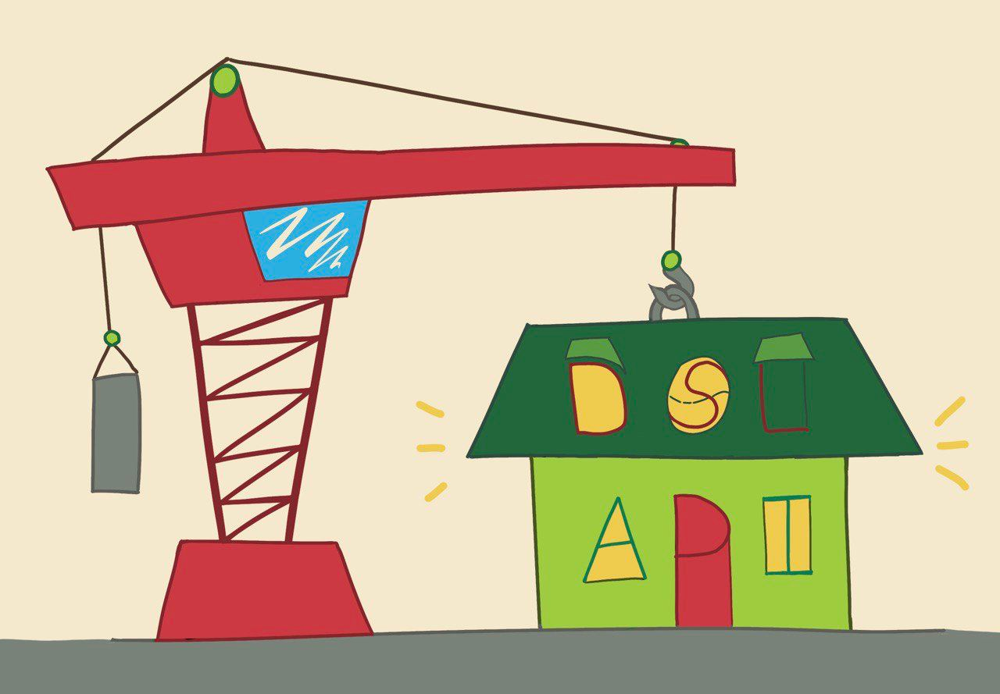

Антипаттерн DSL over API

Kotlin часто рекламируется как язык, в котором классно и легко писать eDSL - embedded domain specific languages. Писать-то может их и классно, но часто потом пользоваться получившимися DSL не очень удобно. В чём же проблема?
Что такое DSL?
Вот у нас есть наш general purpose language. В теории на нём одинаково норм считать траекторию ракеты или показывать котиков в ленте клона тиктока. Можно было бы обойтись чисто классами да функциями. LISP же обходится только списками. Но есть большое количество задач типа арифметики или условных выражений, которые встречаются везде и их чисто синтаксически удобнее читать в другой форме, например, как бинарные операторы для арифметики. И это удобство растёт из культуры. Ну вот в школе нас так научили записывать арифметику инфиксной нотацией а не обратной польской. Поэтому нам нужны скобки, бинарные операторы. И создатели языка обычно не мучают пользователей и добавляют всё это в язык. И вот в Kotlin (и других языках) тебе говорят - гибкость языка позволяет тебе, а не только авторам описать свой домен так, чтобы его задачи можно было решать конструкциями, приближенными к встроенным в язык. Создать свой небольшой embedded domain specific language, играющий по правилам языка-хоста. Это очень круто, парсер, транслятор придумывать не нужно, поддержку в IDE делать не нужно. А выглядеть это будет приближенно к культурно-исторической практике решения задач твоего домена. Только плюсы, да?
Тогда почему же некоторые eDSL до жути нравятся, а от некоторых тошнит?
Сразу забегу вперёд. Чаще всего плохой eDSL получается, когда кто-то концентрируется на “embedded language”, забывая про “domain specific”. В программировании когда-то давно придумали такую классную штуку как разделение на “backend” и “frontend”. И я сейчас не про веб-разработку, а про нечто более широкое. Про Low level и High level. Dsl - это фронтенд, с которым взаимодействует пользователь. И рано или поздно у него найдется потребность которую ты не покрыл. В обычном мире такие юзеры “с потребностями” пишут альтернативные клиенты для твоего API. Но если у тебя нет какого то “API” и твой сервер “отдаёт сразу html странички”, то есть помимо dsl с какими-то выдуманными тобой юзкейсами обходных путей нет, то ему придётся какими то костылями доставать из твоего dsl то что нужно и то как ему удобно. И это будет ломаться и твоя абстракция потечет.
Уважение к коллеге
Здесь очень важно отбросить привычку из продуктовой разработки скрывать от “глупых пользователей” “опасные” методы API. Когда ты пишешь библиотеку, твои пользователи могут быть кратно умнее тебя и иметь более серьёзные потребности, чем те, для которых ты когда-либо тестировал свою библиотеку. Или наборот. Но я считаю, что надо проявлять уважение к коллегам-программистам и не придумывать, что есть какие-то “приватные” апи, которые автору библиотеки можно, а пользователь этого всего видеть не должен и пускай он сидит в пещере за ширмой и по теням eDSL угадывает, что там на самом деле и в каком порядке дёргается “у огня”.
Ну а кишки-то куда девать?
Если делаешь библиотеку с eDSL - делай два артефакта. Один с описанием твоего домена в “обычных” функциях и классах - назовём его API. В другом можешь извращаться с делегатами, инфиксами и переопределением операторов сколько хочешь. Главное правило - играй честно, твоему eDSL должно быть доступно всё то же самое, что и пользователю API. Только так можно сделать библиотеку, которая не будет бесить в краевых случаях, о которых ты не подумал.
Это пост не только про eDSL
То что я выше написал, работает и про обычную разработку библиотек. Сокрытие реализации - классная штука, которая помогает не бояться рефакторить код, которым пользуются другие. Но она хороша пока ты сам играешь по своим правилам. Когда же ты пользуешься хаками типа internal или package-private, ты обходишься с пользователем как со слепым котенком и ставишь его ниже себя. Говоришь, что тебе что-то можно, если очень хочется, а пользователю нельзя, он бесправный. А пользователь не дурак, ему работу делать надо. Он просто скопирует твой код к себе в проект (если лицензия позволяет), поменяет что нужно. И ты достиг совершенно противоположного эффекта - теперь пользователь заложился не на твоё апи и ты никак их не контролируешь и мажорное обновление ему будет очень больно даваться. Да, это его проблемы, он хакнул, но этого можно было избежать.
В общем, будьте котиками
Общайтесь с пользователями вашего кода на равных и вспоминайте этот пост, когда в очередной раз придётся копировать какой-то класс к себе в проект чтобы поменять в нём пару строчек. Кстати, когда у вас в последний раз такое было?
P.S.
Меня на размышления про eDSL натолкнула часть про проблемы JUnit из этого доклада Стюарта Халловея